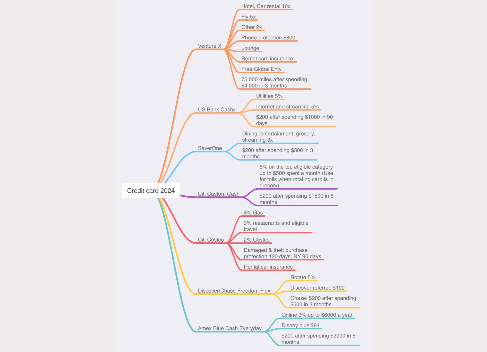

Credit Card Analysis: Credit Card Selection Based on Personal Spending Habits

Project Description:
This project focuses on selecting the optimal set of credit cards tailored to my specific spending habits and lifestyle. By evaluating the rewards, benefits, and offers of different credit cards, I created a comprehensive strategy that maximizes cashback, points, and other perks based on my personal spending categories, including travel, dining, groceries, and online shopping.
1. Spending Habit Analysis:
I categorized my spending habits across different areas such as travel, dining, entertainment, utilities, and online shopping. This ensured that I selected credit cards that best align with where I spend the most.
Notably, I excluded cards that did not fit my lifestyle, such as the Amazon Visa card (since I do not shop at Amazon) and the Bilt Mastercard (as I do not pay rent).
2. Credit Card Evaluation:
I researched various credit cards and their reward structures, comparing sign-up bonuses, cashback rates, travel perks, and other benefits.
The final selection includes cards like the Venture X for travel perks (airline miles, hotel rewards); US Bank Cash + for utilities; SavorOne for Dining, Entertainment, and Grocery; Citi Costco for Costco purchases and gas; Amex Blue Cash Everyday for online shopping, especially since not all websites accept PayPal so I excluded the PayPal Mastercard.
3. Visual Representation:
I created a mind map to visualize each credit card's specific benefits in relation to my spending habits. The map highlights the reward categories, sign-up bonuses, and unique benefits of each card, such as gas rewards, streaming service credits, and protection plans.
This personalized selection allows me to maximize rewards across all my key spending categories, ensuring I get the best value from each credit card without overcomplicating my wallet with unnecessary cards.
{kind=link}